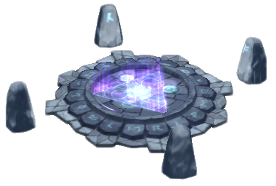

Monster Fusion
Fusion Hexagram is a special type of Summoning Circle which allows players to summon 4-star and 5-star monsters by fusing or sacrificing monsters of lower grades. Fusing a 4-star monster requires sacrificing three natural 3-star monsters and one natural 2-star monster which all have been evolved into 4-stars, awakened and leveled to maximum level (30). Fusing a 5-star monster requires sacrificing three natural 4-star monsters and one natural 3-star monster which all need to be evolved to 5-star, awakened and leveled to maximum level (35). The three natural 4-star monsters are all available from the Hexagram itself. Mana Stones are required for any fusion.
Not all monsters are available for summoning in this way. Players are required to follow a set of "Recipes" for summoning certain monsters, and which also dictate which monsters are required as ingredients for fusion. The monsters required for fusion can usually be found either in Scenario areas or Secret Dungeons, although some require summoning through either Mystical Scrolls, Unknown Scrolls or Summoning Pieces from the Guild Shop.
It should be noted that locked monsters can't be used as material monsters. And because material monsters are lost after fusion, any runes attached will also be lost.
The Fusion Hexagram is available in all countries, although the system has been altered in Japan.
Below are the mons you can only get from fusion